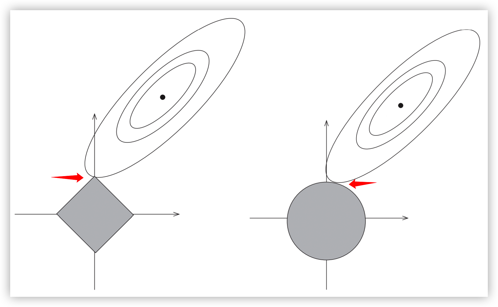

正则化
说明：在该篇文章中所有的推导都忽略了偏置项 bias；
1、L2正则
正则化项为 \Omega (\theta) = \frac{1}{2}||\theta||^2_2，系数 \frac{1}{2} 是为了求导时得到的系数为 1；
L_2 正则化能够使参数 \theta 的方差更接近0；
目标函数：
梯度为：
梯度下降过程如下，这里的 \gamma 为学习率：
对上述梯度下降过程整理一下得：
在不使用 L_2 正则化的情况下，梯度下降的公式为：
对比公式(4)和公式(5)可知，L_2正则化对梯度更新的影响是：每一步执行更新前，会对权重向量乘以一个常数因子来收缩权重向量，使参数 \theta 的方差更接近0，因此L_2也被称为权重衰减；
2、L1正则
正则化项为 \Omega(\theta) = ||\theta||_1 = \sum_{i=1}^d |\theta_i|，即各个参数的绝对值之和；
目标函数：
梯度：
其中 \text{sign}(\cdot) 表示取自变量的符号；
梯度下降过程如下，这里的 \gamma 为学习率：
对上述梯度下降过程整理一下得：
在不使用 L_1 正则化的情况下，梯度下降的公式为：
对比公式(9)和公式(10)可知:
-
上面讨论过 L_2 正则化对梯度更新的影响是：给每个权重值乘上一个常数因子，线性的缩放每个权重值；
-
L_1正则化对梯度更新的影响是：给每个权重值减去一个与 \text{sign}(\theta_i) 同符号的常数因子；
特别说明：对于带有 L_1 正则的目标函数，由于其不是处处可导，所以一般不使用梯度下降法进行求解，这里只是和 L_2 正则做一个类似的讨论。在本文的最后一部分会介绍坐标下降法，是更常用的用于求解带有 L_1 正则的目标函数的方法；
3、Lasso回归与岭回归
3.1 Lasso回归与岭回归的定义
在线性回归的目标函数上添加上 L_1 或 L_2 正则化项，则可以得到Lasso回归和岭回归，其公式如下：
Lasso回归：
岭回归：
3.2 L1为何能做特征筛选
关于 L_1 和 L_2 有一个常见的结论是：
- L_1：能够使权重值中的一些特征趋于0，因此可以用来做特征筛选；
- L_2：能够使权重值中的所有特征的方差趋于0；
这一部分讨论一下为什么 L_1 能够使权重值中的一些特征趋于0；
Lasso回归与岭回归的目标函数都是拉格朗日格式，其中 \alpha 是KKT乘子，所以可以将其改写为带有约束条件的最优化问题。
Lasso回归：
岭回归：
其中 t 表示正则化的力度，t 越小，正则化力度越大，也对应原目标函数中的 \alpha 越大。
下面通过画图来理解。

如上图所示，Lasso回归（即公式(13)）的约束条件为左图中灰色的方形区域；岭回归（即公式(14)）的约束条件为右图中灰色的圆形区域；两图中右上方的椭圆线为损失函数 L(\theta) 的等高线，损失函数 L(\theta) 在椭圆的中心处取得最小值。
既要满足方形/圆形的灰色区域的约束，又要尽量取最小值，可知上述两个带约束的最优化问题的最优解都在：等高线与约束区域边界的交点处；即两个红色箭头所指的交点处。
由于 L_1 正则对应的约束区域是方形的，椭圆形的等高线与方形区域边界的交点更容易出现在该方形区域的顶点上，也就是坐标轴上。而这些坐标轴上的点仅当前坐标轴对应的维度非0，其他维度取值都为0。所以相比于 L_2，L_1更适合做特征选择。
4、带有L2正则的目标函数的求解
4.1 公式
由于 L_2 正则本身连续且处处可微，所以直接使用梯度下降法即可进行求解。
在第一部分的讨论中，已经求得了带有 L_2 正则的目标函数的梯度下降过程公式：
这个公式很简单，下面看一下在Pytorch中是如何实现L_2正则的功能的。
4.1 Pytorch中L2的实现
4.1.1 调用方式
在 pytorch 中L2正则是通过 weight decay 在优化器中实现的，只需要在初始化优化器时指定哪些参数需要L2正则，哪些参数不需要L2正则即可。如下所示：
weight_decay = 0.01
learning_rate = 0.00005
no_decay = ["bias", "LayerNorm.weight"]
optimizer_grouped_parameters = [
{
"params": [p for n, p in model.named_parameters() if not any(nd in n for nd in no_decay)],
"weight_decay": weight_decay,
},
{
"params": [p for n, p in model.named_parameters() if any(nd in n for nd in no_decay)],
"weight_decay": 0.0,
},
]
optimizer = AdamW(optimizer_grouped_parameters, lr=learning_rate)
4.1.2 源码
以最简单的SGD优化器来看一下L2正则在优化器中具体是如何实现的：
class SGD(Optimizer):
def step(self,):
for group in self.param_groups:
lr = group["lr"] # 学习率
weight_decay = group["weight_decay"] # weight decay
for p in group["params"]:
if p.grad is None: # 如果当前参数梯度为None，则不需要更新
continue
d_p = p.grad # 梯度
if weight_decay != 0:
# 在原梯度的基础上加上 (weight_decay * 权重)
d_p.add_(weight_decay, p.data)
# 将（梯度 * -学习率）更新到权重参数上；当 weight_decay 不等
# 于0时，这里的梯度 d_p 已经加上了(weight_decay * 权重)
p.data.add_(-lr, d_p)
再放一下梯度下降过程的公式，对着公式来看代码：
-
公式中的 \alpha 对应代码中的
weight_decay； -
公式中的 \gamma 对应代码中的
lr；
代码中的注释很详细，不再赘述。
5、带有L1正则的目标函数的求解
待续